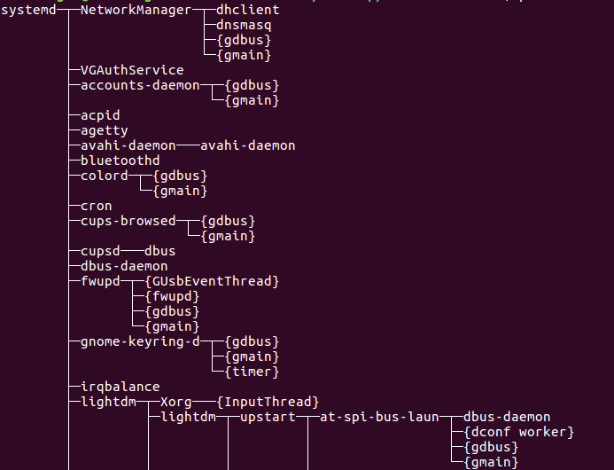
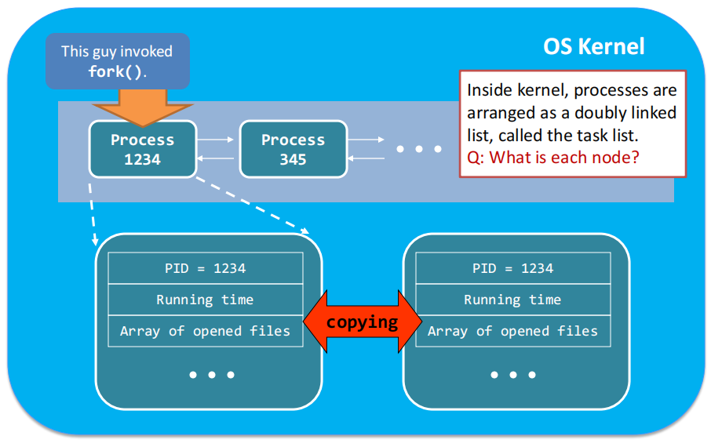
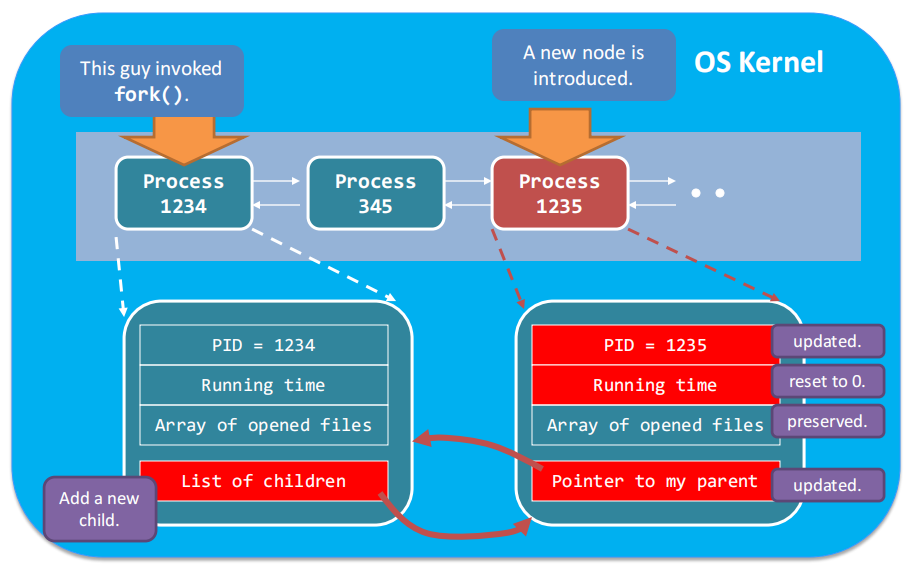
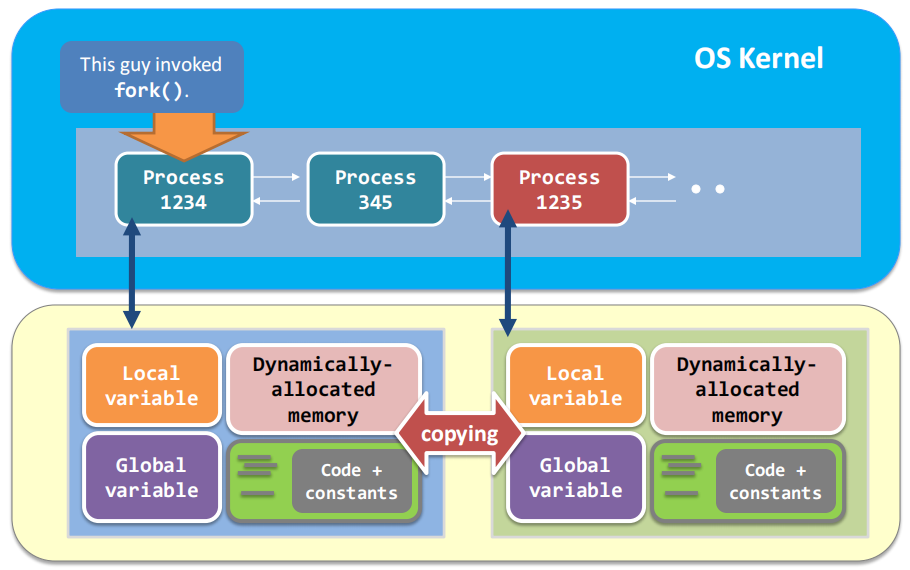
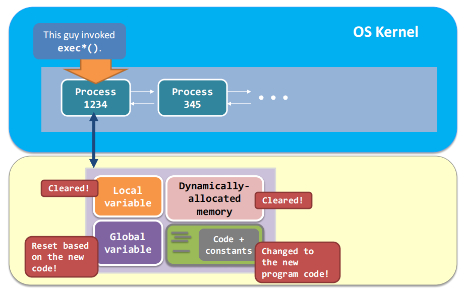
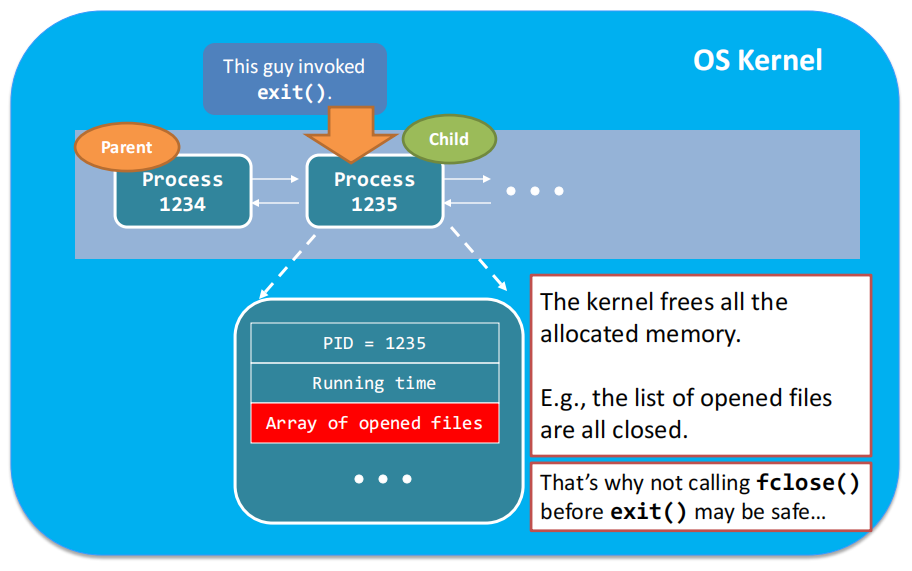
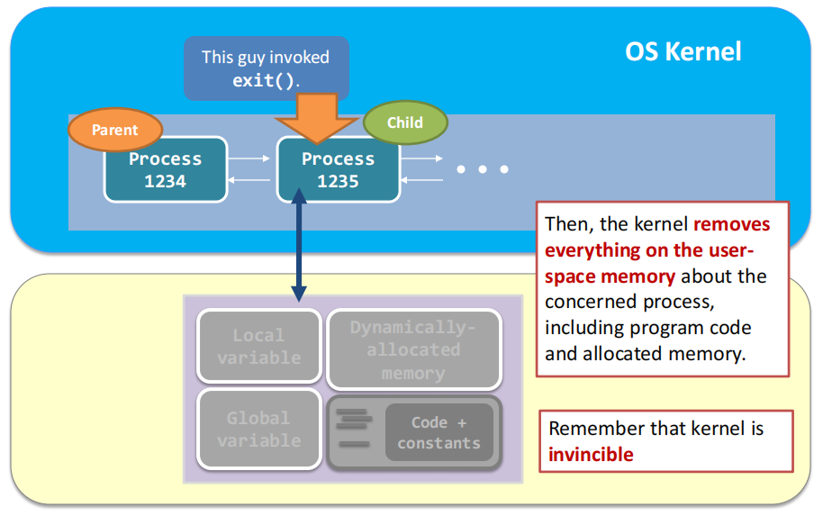

Operating Systems
This part inlcudes important topics in OS.
Content outline
- 操作系统服务

- 方便用户的服务
- 用户界面 / User Interface
- 程序执行 / Program Execution
- I/O操作 / I/O Operation
- 文件系统操作 / File-system Manipulation
- 进程间通信 / Communications
- 错误检测 / Error Detection
- 保证效率的服务
- 资源分配 / Resource Allocation
- 统计 / Accounting
- 保护和安全 / Protection and Security
- 系统调用/System Calls
- 操作系统结构
- 简单结构(Simple Structure)：MS-DOS

无良好定义的结构，没有模块之分，在最小的空间内提供最多的服务
- 整体式结构(Monolithic)：UNIX

系统程序+内核，有限分层
- 分层结构(Layered Approach)

- 微内核(Microkernel)：Mach
将所有非基本部分从内核移除，实现为系统程序或者用户程序，微内核主要功能是使各种服务通信
- 模块(Modules)：

核心内核+可加载内核模块，任何一个模块都可以加载任何一个模块且不需要调用消息传递来通信，核心内核只有核心功能以及其他模块加载和通信的相关信息
- 混合式(Hybrid)：Mac OS X kernel, Windows, Linux
- 操作系统设计与实现
- 进程的概念
- 进程(Process)与程序(Program)
- 程序：一段静态代码
- 进程：代码的执行实例，当一个程序被加载进入内存后，它就成为了进程；进程是动态的
- 内存中的进程-进程包含的内容

用户空间内容：用于进程的运行 vs.内核空间内容：用于进程管理
- 文本段：代码
- 数据段：全局变量
- 栈：临时数据，如函数参数、返回地址、本地变量
- 堆：动态分配内存空间
- 程序计数器、寄存器内容(在PCB内)
- 进程状态

- 新的(new)：进程正在被创建
- 运行(running)：指令正在被执行，此状态已获得CPU资源，在任何一个CPU上，某时刻只有一个进程在运行
- 等待(waiting)：进程正在等待某事件发生，例如I/O结束
- 就绪(ready)：进程正在等待被分配给某CPU，此时需要进程调度
- 终止(terminated)：进程结束执行
- 进程控制块-表示、定位、管理进程的数据结构

- 进程状态
- 程序计数器
- CPU寄存器
- CPU调度信息
- 内存管理信息
- I/O状态信息，打开文件列表
- 记账信息：CPU时间，使用时间，时间界限...
- 进程的用户时间和系统时间
系统运行总时间（性能）= 用户时间 + 系统时间
注意：
- 编写程序时要同时考虑用户时间和系统时间，因为某些系统调用（如阻塞系统调用）会花费相当长的时间
- 进程操作
系统提供的用于进程辨识、创建进程、执行程序、结束进程的工具。
- getpid()
进入内核空间，查询PCB中的pid，并返回
- 进程创建
当系统启动时，创建的第一个进程-init，此进程作为进程树的根，创建更多进程
进程树的查看：pstree 命令

- fork() - "Cell division"
- 系统修改的内容：pid、运行时间、调用返回值、父进程的孩子指针和子进程的父指针
- 系统没有修改的内容：用户空间进程数据（完全复制，包括代码段、全局变量、局部变量、动态分配空间）、打开文件指针列表、PC等CPU寄存器内容
fork()调用复制PCB并更新子进程PCB


fork()调用不对用户空间进程的相关数据做修改，只是复制

- exec*() - Go to another program
execl(program directory,1st arg,2nd arg,...,NULL)
- 系统修改的内容：用户空间进程数据（包括代码段、全局变量、局部变量、动态分配空间）、PC等CPU寄存器内容
- 系统没有修改的内容：pid、运行时间
exec()系统调用搜索目标程序，更新用户空间进程数据

- wait() - 挂起父进程，等待任意子进程结束，唤醒父进程
wait()系统调用做的事情：杀死僵尸进程，管理资源 -> 非常重要，原因是：防止僵尸进程堆积而占据资源（pid是有限的），有效的进行系统资源管理
- 设置信号处理服务例程，当收到SIGCHLD信号则对其进行处理。默认情况下，所有的进程都对SIGCHLD没有反应。
- 收到SIGCHLD，移接收并移除SIGCHLD，销毁子进程。
- 移除服务例程，开始无视SIGCHLD，继续执行，返回子进程pid。
- exit() - 结束进程，并唤醒父进程
exit()系统调用做的事：让进程成为僵尸进程，回收资源
- 回收大部分的内核空间分配的存储空间
- 回收所有用户空间分配的存储空间
- 子进程发出SIGCHLD通知父进程自己的结束，成为僵尸进程
Linux系统僵尸进程标签：[defunct]
Note：特殊情况-孤儿僵尸进程，init进行reparent并定期调用wait()


- 线程
Questions
此部分包含了一些经典的OS的问题以及部分参考回答，题目前标注了该问题知识点所处的章节
- (1)从用户的角度来看，操作系统的功能是什么？从系统的角度来看，操作系统的功能是什么？
- (1)操作系统提供的服务有哪九种？分别具体指什么？
- (1)用户空间和内核空间指什么？为什么要做这样的区分？
- (1)Dual mode是什么？为什么要区分用户模式和内核模式？进程的用户时间和系统时间指什么？
- (1)Multiprogramming和Multitasking分别指什么？它们的作用或者说目的是什么？
- (1)系统调用是什么？API与系统调用的关系是什么？
- (1)操作系统的结构有哪几种？它们各自的优缺点是什么？Linux,MacOS,Windows是什么类型的？
- (1)
- (3)为什么说程序是静态的，进程是动态的？
- (3)进程包含了哪些内容？对于一个进程而言，存储在用户空间和内核空间的内容分别是什么？用户/内核空间存储的内容对于进程的意义分别是什么？
- (3)进程的状态有哪些？这些状态的状态转换图是什么样的？
- (3)PCB包含了哪些内容？PCB的作用是什么？
- (3)代码段相同的进程是否一定是同一个进程？或者说两个不同的进程能否运行同一个程序？同一进程能否运行不同的程序？
- (3)在任意时刻，一个核上能否运行多个程序？如果不能，为什么我们在使用个人电脑时，可以同时运行多个程序？
- (3)程序能否作为其他程序运行的环境？请举一个例子？
- (3)操作系统用什么标识进程？
- (3)子进程和父进程指什么？它们之间在资源、运行顺序以及地址空间上有什么关系？进程树是什么？操作系统怎么处理孤儿进程？为什么当终端关闭后，后台进程可以继续运行？对于windows和linux系统，进程树会有多棵么？
- (3)说一说fork()系统调用如何工作？通过fork()创建的子进程是父进程的一个拷贝么？如果不是，它们的异同是什么？
- (3)说一说exec()系统调用如何工作？exec()调用与普通函数调用的区别是什么？exec()系统调用为什么不会回到原来的进程继续执行？execl()调用后，“新”的进程保留了原进程的哪些部分？
- (3)wait()系统调用对于程序员来说作用是什么？对于系统呢？若父进程对应的代码段里存在wait()，那么父进程是否一定会被阻塞(考虑进程执行的顺序？)？父进程收到SIGCHLD后如何进行处理？wait()的返回值是什么？
- (3)如果在父进程调用wait()前，子进程已经调用exit()，这是否会对wait()的执行产生影响？
- (3)exit()系统调用为什么一般和wait()配合使用？僵尸进程是什么？exit()系统调用过程中，内核做了什么工作？exit()系统调用后，进程进入terminated状态，terminated状态的作用是什么？
- (3)僵尸进程的作用是什么，或者说exit()调用为什么不直接杀死进程并销毁PCB而是让进程变为僵尸进程？僵尸进程的PCB包含哪些内容？当子进程结束时，父进程收到什么信号？
- (3)在什么情况下进程会成为僵尸进程？从main()函数返回或者进程异常结束会么？僵尸进程什么时候结束？
- (3)孤儿僵尸进程会发生在什么情况下？如何解决这个问题？
- (4)线程是什么？线程和进程之间的关系是什么样的？同属一个进程的线程哪些数据资源共享，哪些部分不共享？
- (4)什么是线程函数？线程函数是否会返回到其调用者？
- (4)为什么要使用多线程而不是多个进程即可？
- (4)使用多线程的优点体现在哪些方面？
- (4)用户线程和内核线程是什么？
- (4)线程模型有哪三种？多对一模型的优缺点是什么？一对一模型呢？
- (4)线程池是什么？线程池的好处有什么？
Reference
Back